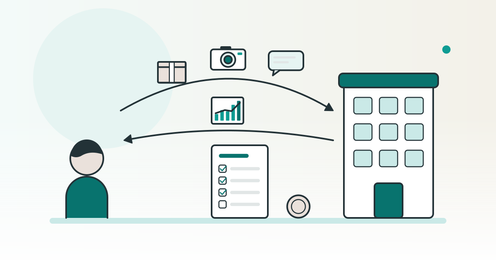

SHOPKIT コラム
ネットショップの運営代行とは任せられる作業・費用の型・注意点

ネットショップの作業を外へ頼みたいときは、何を任せ、費用をどう比べればよいでしょうか。作業と店側の判断を分け、見積りや契約で確かめる欄を整理します。任せる範囲を決めた後も、自分が確認する内容を残しておきましょう。
この記事は、完成品のネットショップを販売している SHOPKIT が書いています。
運営代行は、お店の作業の一部を外の会社に任せること
この記事では、お店を続けるための作業を、外の会社などへ依頼する形を運営代行と呼びます。商品情報の登録、写真や文章の準備、注文の確認、問い合わせ対応など、どの作業を扱うかは依頼先の提案と契約で確かめます。
「店を任せる」という言葉だけで相談せず、困っている作業と、自分では続けられる作業を書き出しましょう。制作して受け取る物と、継続して行ってもらう作業も分けます。
外へ頼む範囲を考える前に、日々の流れを整理したい場合は、一人で続ける作業を扱う記事が確認の入口になります。
関連：ネットショップを一人で運営するには｜毎日の作業と、続けるための決めごと
任せられる作業と、自分に残る責任を分けて考える
作業を頼む欄と、店として決める欄を別にします。以下は依頼内容を整理する例です。依頼先がすべて対応できるものとはせず、作業の範囲と承認の戻り先を尋ねます。
| 頼む作業の候補 | 店側で決めておくこと | 受け取って確かめること |
|---|---|---|
| 写真や説明の準備・登録 | 元の資料、使える写真、内容を承認する人 | 資料と説明が合うか、選んだ商品や販売条件を取り違えていないか |
| 注文の確認や発送の連絡 | 頼む所と自分が行う所、例外を相談する相手 | 済んだ作業と未完了の作業、対応する注文の記録 |
| 問い合わせへの対応 | 回答の材料と、自分の判断へ戻してもらう内容 | 質問・回答・残った確認事項と、次の担当 |
消費者庁の通信販売の案内は、広告で示す項目として、販売者の情報、代金や送料、支払い・引き渡し、返品に関する条件などを挙げています。一定の条件で表示の一部を省ける場合の説明もあります。
説明や案内を外へ頼む場合も、店の実際の条件と照らす担当を決めます。個別の表示や省略の可否は公的な窓口で確認しましょう。
個人情報保護委員会の個人情報の取扱いに関する通則編では、個人データの取扱いを委託する際の、委託先に対する監督が説明されています。
注文情報を渡すなら、何のためにどの情報を使うか、相手の取扱いをどう確認するかを依頼前に整理します。必要な範囲や具体的な方法は、店の実情と公的な案内を照らして確かめます。
費用の型は、毎月の固定・売上に応じた額・その組み合わせ
見積りは、金額の見出しだけでなく、何を基に計算し、何が別にかかるかまで並べます。比較する欄として、毎月の固定額、売上に連動する額、両方を合わせる形に整理できます。実際にどの型で契約するかは、依頼先の見積りで確認します。
この記事は、完成品のネットショップを販売している SHOPKIT が書いています。
| 費用を整理する型 | 見積りで確かめる欄 |
|---|---|
| 毎月の固定額 | 含まれる作業と対応する範囲、作業を追加した場合の扱い |
| 売上に応じた額 | 計算の対象、率や計算方法、締める日、取消しや返品の反映方法 |
| 固定額と連動額の組み合わせ | それぞれの対象、重なって数える部分がないか、別に請求する項目 |
ネットショップの運営代行を成果報酬で検討するときも、何を「成果」として数えるかを先に読みます。売上のどの範囲を対象にするのか、取消しが後から出た場合にどう精算するのかを、同じ記録で照らせる形にしましょう。
依頼料とは別に店が払う広告費や商品代、送料などがあるかも聞きます。新しい写真の制作や契約の終了に伴う作業が別料金かどうかも、見積りへ書き分けてもらいます。
成果報酬という名前だけで、費用の総額や販売の結果は判断しません。支出の準備は、店で必要なお金を整理する記事も参照できます。
関連：ネットショップの開業資金はいくら？始め方別の初期費用と毎月のお金
契約の前に、作業の範囲・報告・やめるときの条件を確かめる
始めるときの依頼内容と、終了するときに受け取る物を続けて確認します。作業の範囲、内容を確認する方法、報告を受ける区切り、修正の扱い、追加費用の確認先を並べましょう。
報告では、行った作業、残っている作業、店の判断が要ることを分けてもらいます。数字を受け取る場合は対象期間と数え方も確かめ、意味の違う数を並べたままにしません。
店を使う権限や、作った写真・文章を契約後も使える範囲は、契約前の質問にします。終了時に返してもらう記録、相手が保管する情報の扱い、連絡や作業を自分へ戻す流れも残しましょう。
期限や解約の条件は、個別の契約と取引の条件で確認します。分からない点は、そのまま同意せず、該当する文と質問をまとめて相談先へ持っていきます。
個人に頼むときは、発注する側が守る決まりがある
個人への依頼でも、仕事の内容と相手の事業の形を確認してから条件をそろえます。会社へ頼む場合と同じ欄を埋めるだけで終わらせず、発注する側に関係する決まりを確認しましょう。
e-Govのフリーランスへの発注に関する法律では、仕事を受ける事業者の定義に、従業員を使っていない個人などを挙げています。条文には、仕事の内容や報酬、支払日などの条件を示すことについての規定があります。
依頼する側と受ける側の形、取引内容などをそろえ、どの規定に当たるかを公的な窓口で確かめます。表示する事項や方法には条文上の条件があるため、個別の義務や期限はここで判断しません。
相談用には、頼む内容、相手と自分の事業の形、契約の期間、報酬の決め方、未回答の質問を整理します。何をいつ受け取り、どこで内容を確認するかも、取引の説明に添えましょう。
関連：ネットショップ開業はどこに相談する？無料の公的な窓口と相談の準備
任せる・一人で回す・お店を買って始めるを比べる
販売開始までの準備と、始めた後の作業を分けて選びます。今ある店の作業を外へ頼むか、自分で続ける範囲を整えるか、用意されたお店から始めるかを、現在の準備状況に合わせて比べましょう。
自分で続ける場合は、残す作業と判断の戻り先を整理します。外へ任せる場合は、契約する範囲と店側の確認をそろえます。お店を買う場合は、出来ている範囲と、購入後に自分で進めることを確かめます。
関連：ネットショップは作る？買う？始め方の手間と費用を比べる
SHOPKITの2026年10月15日時点のサービスページは、商品と店舗を整えて販売を始める準備をした状態でお渡しすると案内しています。出典：お渡しするもの。
お渡しする内容には、お店一式と仕入れの情報、運営・集客のマニュアルが含まれます。
同じサービスページのよくある質問では、お店の売上は保証していない旨が案内されています。
購入を考えるときは、資料を受け取る範囲と、自分が販売後に行う作業を確認します。外へ頼む契約を考えるときは、先に書いた依頼内容と費用の欄を用い、それぞれの目的に合うかを確かめましょう。
よくある質問
ネットショップの運営代行は、すべての作業を頼めますか？
作業ごとに対応する範囲を尋ねます。提案に含まれる内容、店が承認する所、例外が起きたときの確認先を契約前に分けましょう。
成果報酬なら、依頼料以外に払う費用はありませんか？
計算の対象と、固定額や別の支出があるかを見積りで確かめます。取消しや返品の精算、新しい制作や終了時の作業の扱いも並べて確認しましょう。
店の注文情報を依頼先へ渡すとき、何を確かめますか？
渡す目的と範囲、相手の取扱いを確かめる方法を整理します。店の実際の作業と公的な情報管理の案内を照らして、具体的な方法を決めましょう。
個人へ作業を頼む場合も、契約前の確認は必要ですか？
仕事内容と、依頼する側・受ける側の事業の形をそろえ、発注に関する決まりを確認します。個別の義務や期限は、公的な窓口で取引の条件を示して確かめます。
※ SHOPKITのお渡しするものと売上に関する案内は、2026年10月15日時点のサービスページの記載です。公的資料は2026年10月27日に確認した内容です。契約や情報の扱いは、最新の公的な案内と実際の取引条件で確かめてください。